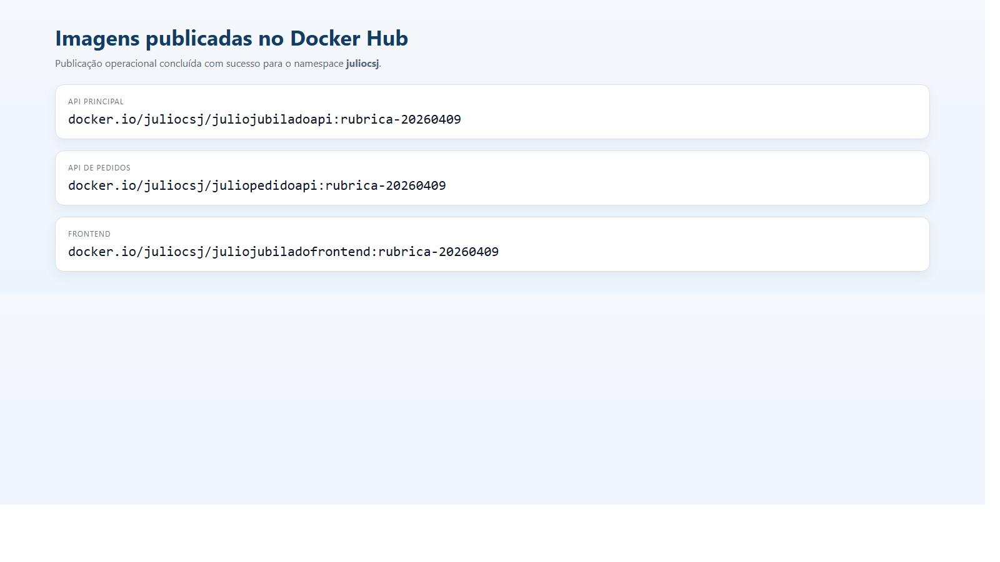
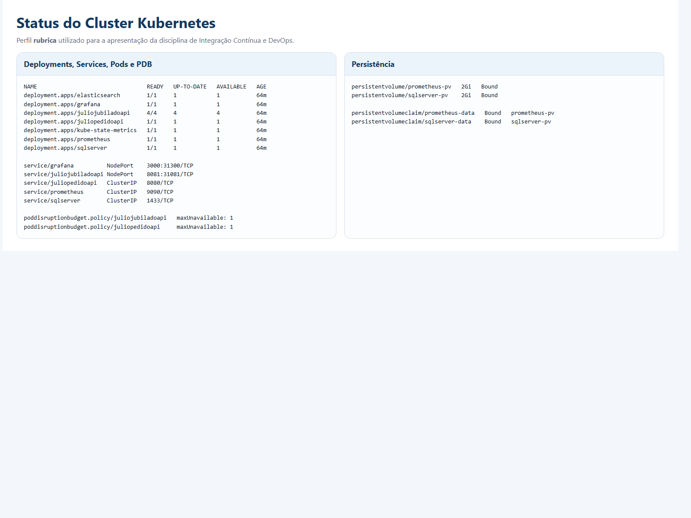
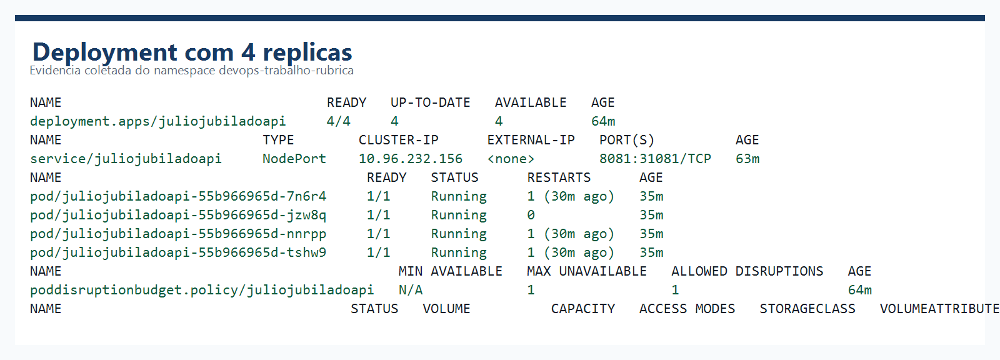
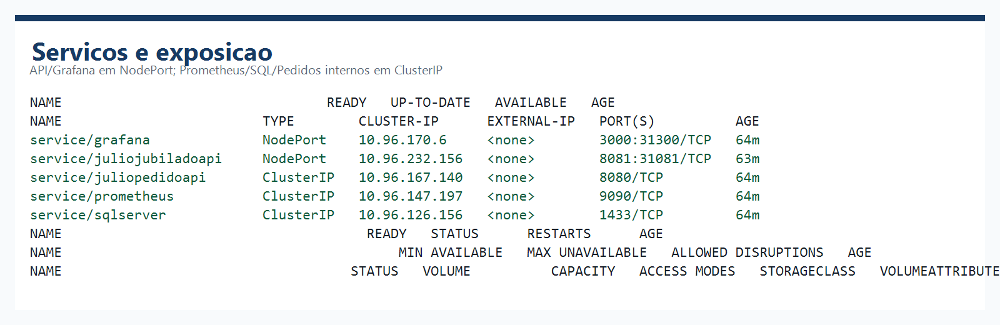
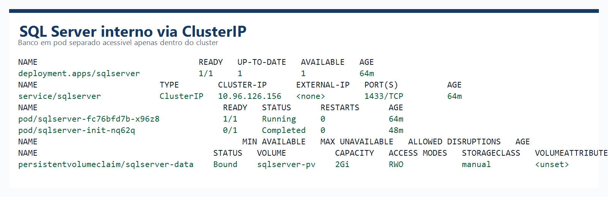
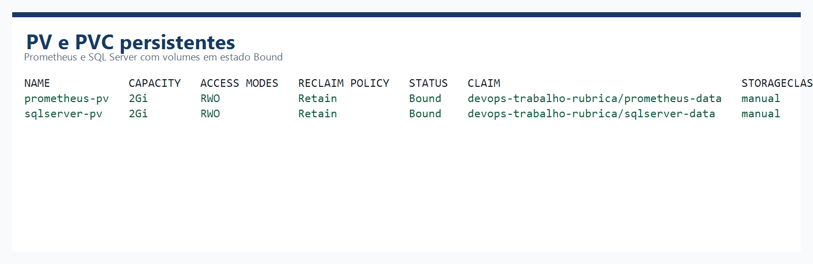
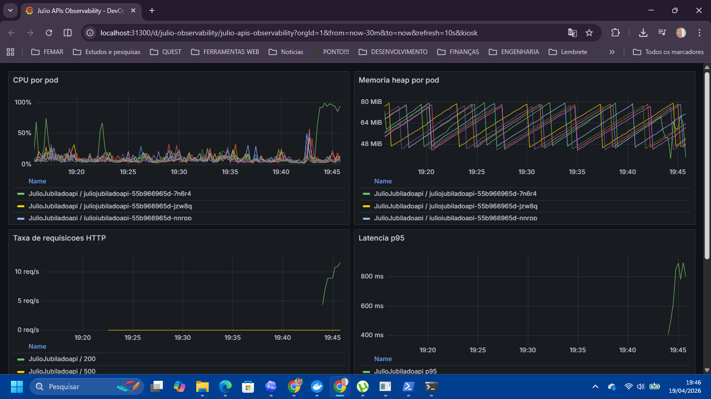
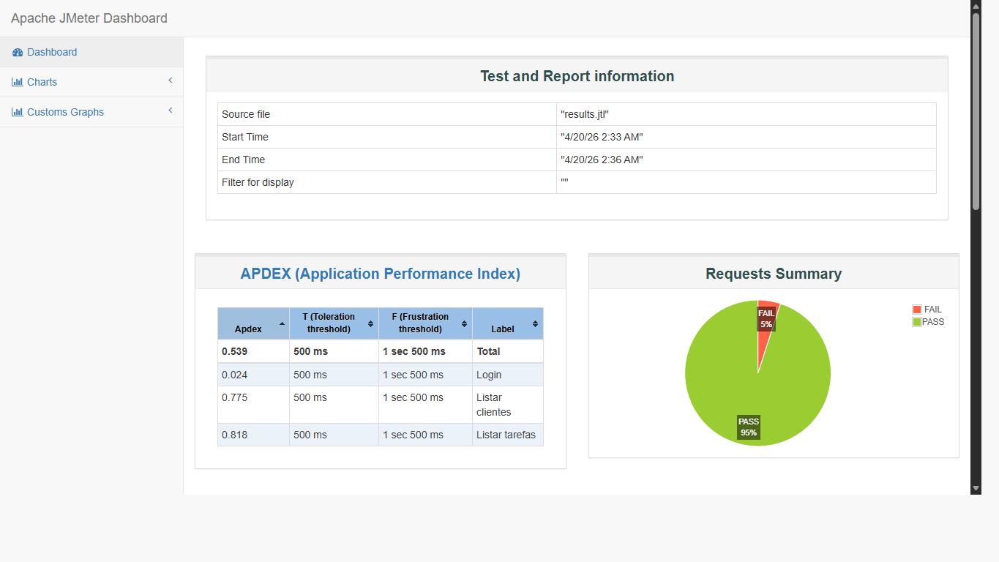
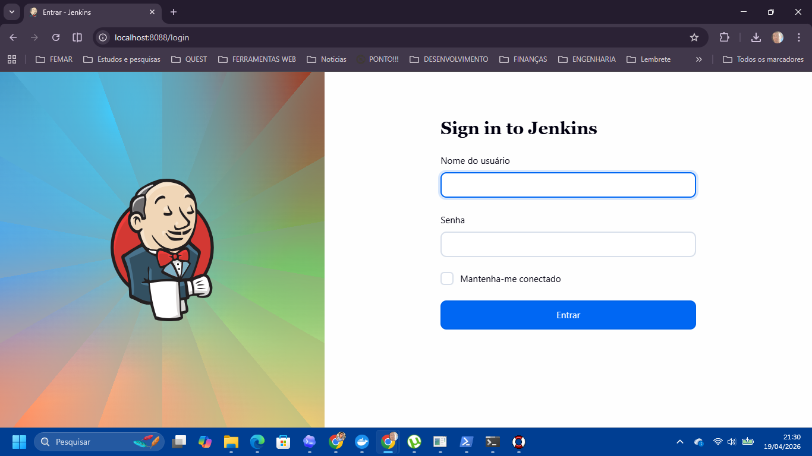

Este relatório apresenta, de forma técnica e estruturada, a implementação realizada para o trabalho prático da disciplina Integração Contínua e DevOps. O objetivo principal foi comprovar, por meio de código, infraestrutura versionada e evidências operacionais, a aplicação integrada de práticas modernas de containerização, orquestração, observabilidade, automação de entrega e testes de carga.
Para atender ao enunciado, foi utilizado o projeto BorrachariaAPI, um monorrepositório baseado em Java com Spring Boot, complementado por front-end web e infraestrutura em Docker e Kubernetes. Além da implementação, este documento também consolida as rubricas atendidas e os materiais comprobatórios gerados durante a execução.
Nas evidências operacionais e em alguns artefatos de infraestrutura, ainda aparecem nomes legados do repositório, como juliojubiladoapi. Esses identificadores são apenas nomes técnicos do ambiente e não alteram o fato de que o projeto acadêmico entregue neste relatório corresponde ao BorrachariaAPI.
A solução é composta por um front-end web, duas APIs baseadas em Spring Boot e componentes de infraestrutura responsáveis por persistência e observabilidade. Para fins de apresentação, foi criado um perfil dedicado que materializa de forma objetiva os requisitos do enunciado.
| Componente | Tecnologia | Função |
|---|---|---|
| Front-end | React + Vite + Nginx | Interface web e proxy reverso para as APIs. |
| BorrachariaAPI (API principal) | Spring Boot 3 / Java 21 | API principal, autenticação, cadastros e endpoints centrais. |
| juliopedidoapi | Spring Boot 3 / Java 21 | Gestão de pedidos e integrações externas. |
| SQL Server | Container oficial | Banco relacional acessível internamente por ClusterIP. |
| Prometheus | Prometheus 2.54 | Coleta e armazenamento persistente de métricas. |
| Grafana | Grafana | Dashboards e visualização dos indicadores operacionais. |
| Jenkins | Jenkins + CasC | Pipeline de entrega alternativo aceito pela disciplina. |
Foram criadas imagens personalizadas para as três aplicações do projeto. A publicação no Docker Hub foi automatizada por script e pipeline, e também executada operacionalmente com sucesso para as tags finais da entrega.

O perfil rubrica foi preparado especificamente para a apresentação. Nesse perfil, a API principal executa com quatro réplicas, o banco de dados fica em pod separado com Service do tipo ClusterIP, e Prometheus e SQL Server utilizam volumes persistentes. Além disso, as APIs possuem probes de prontidão e de vivacidade por meio do Spring Boot Actuator.





O Prometheus foi configurado para descobrir e raspar automaticamente os pods das APIs que possuem anotações de métricas. O Grafana foi provisionado com um dashboard voltado para a observabilidade das aplicações, incluindo CPU por pod, memória heap, taxa de requisições HTTP, latência p95 e disponibilidade.
O projeto contém pipeline de entrega com GitHub Actions e também um Jenkinsfile. Essa dupla abordagem atende à exigência do curso e demonstra o uso de automação de build, teste, publicação de imagens e deploy.
O teste de carga principal foi realizado com k6 e usado para acionar alterações reais no dashboard do Grafana. Em paralelo, o projeto também possui um plano gráfico em JMeter e relatório HTML gerado localmente, atendendo aos itens relacionados à ferramenta.



docker.io/juliocsj/juliojubiladoapi:rubrica-20260409 docker.io/juliocsj/juliopedidoapi:rubrica-20260409 docker.io/juliocsj/juliojubiladofrontend:rubrica-20260409
| Item da rubrica | Status | Evidência resumida |
|---|---|---|
| Docker para criar containers com imagens da aplicação | Atendido | Dockerfiles próprios para front-end e APIs Spring Boot. |
| Recursos básicos do Docker (binds e volumes) | Atendido | Docker Compose com volumes e montagens para banco, Jenkins e evidências. |
| Kubernetes para execução da solução | Atendido | Perfis base, HA e rubrica versionados no repositório. |
| Primitivos do Kubernetes (pods, services e volumes) | Atendido | Deployments, Services, PVs, PVCs, Jobs e PDBs implementados. |
| Networks no Docker | Atendido | Redes explícitas no docker-compose. |
| Envio da imagem para o Docker Hub | Atendido | Publicação operacional concluída para três imagens. |
| PV no Kubernetes | Atendido | prometheus-pv e sqlserver-pv criados e vinculados. |
| PVC no Kubernetes | Atendido | prometheus-data e sqlserver-data em estado Bound. |
| Readiness Probe | Atendido | Readiness configurada nos backends e componentes de monitoramento. |
| Liveness Probe | Atendido | Liveness configurada nos backends e componentes de monitoramento. |
| Teste de estresse via interface gráfica | Atendido | JMeter com plano gráfico (.jmx) e dashboard HTML. |
| Teste de estresse via script | Atendido | Script k6 com wrapper PowerShell. |
| Exportação de métricas do projeto | Atendido | Actuator + Micrometer + endpoints /actuator/prometheus. |
| Prometheus realizando scrape | Atendido | Alvos das APIs ativos e coletados no namespace rubrica. |
| Grafana instanciado no cluster | Atendido | Deployment e Service ativos no ambiente de entrega. |
| Dashboards no Grafana | Atendido | Dashboard provisionado com CPU, memória, latência e disponibilidade. |
| Testes com JMeter | Atendido | Plano .jmx e relatório HTML gerado. |
| Script de teste com JMeter | Atendido | Wrapper PowerShell disponível no repositório. |
| Jenkins instanciado | Atendido | Serviço Docker e configuração como código presentes no projeto. |
| Pipeline de entrega com Jenkins | Atendido | Jenkinsfile com build, testes, publicação e deploy. |
O trabalho proposto pela disciplina foi atendido por meio de uma solução integrada que cobre containerização, publicação de imagens, implantação em Kubernetes, observabilidade, pipeline de entrega e testes de carga. A implementação não ficou restrita ao código: foi acompanhada de evidências operacionais reais, incluindo a publicação das imagens no Docker Hub e o dashboard do Grafana sofrendo alterações durante a carga.
Do ponto de vista acadêmico, a entrega demonstra domínio prático de conceitos centrais de Integração Contínua e DevOps aplicados a um projeto Java com Spring Boot. Do ponto de vista profissional, o resultado se aproxima de um fluxo real de engenharia de software, com versionamento de infraestrutura, automação de execução e rastreabilidade por evidências.